A few days in Assynt
Holiday how the Scots do it
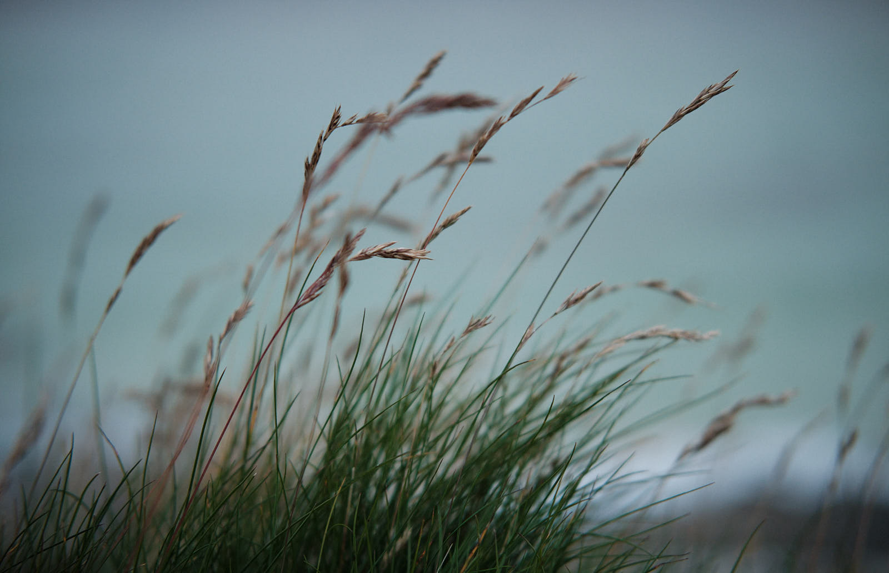 Achmelvich beach, X-T2 XF35mm, ISO 1600 f/2 at 1/1000s
Emerging confidently from weeks of COVID-19 lockdown and the sting of a cancelled Hebridean trip at Easter, we consoled ourselves with a few days immersed in the beauty of the Sutherland Assynt.
I went armed with a full complement of cameras (five - count them. Who needs five cameras?), most of which I now fit into a new kitBrick which I picked up at Tiso in Perth on the way up. Finally, I have a camera kit bag solution that works for all the gear I carry on a trip like this.
Achmelvich
The drive was long but pleasant, in a new (to us) Mercedes GLA, which is much more suited to the kind of driving one does on a trip to the Northwest of Scotland than the saloon it replaced. We took a look at Achmelvich beach after settling in to the apartment we had AirBnB’d for a few nights. Everything seems booked up, which seems weird, given that there are almost no overseas visitors to these shores at present and the roads are almost utterly empty.
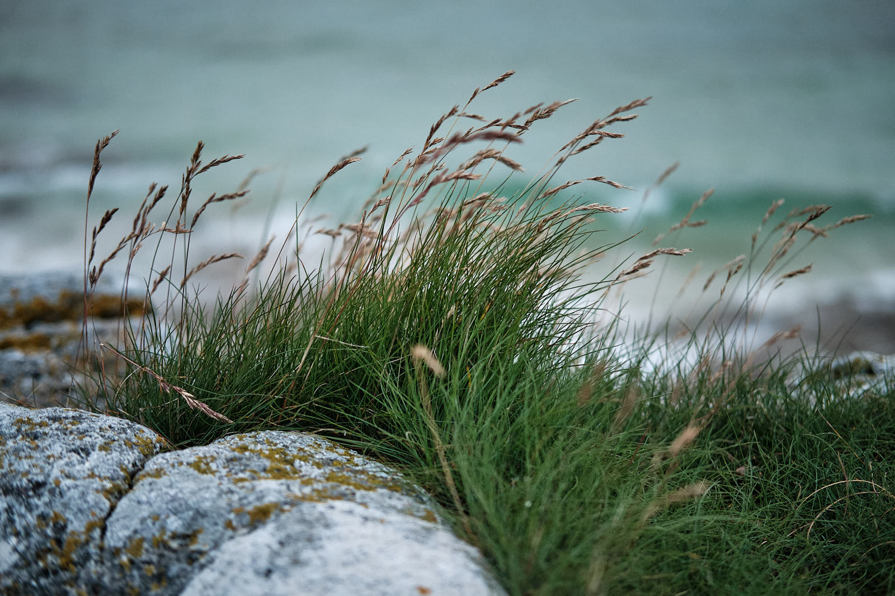 Achmelvich beach X-T2 XF35mm, ISO 1600 f/2 at 1/1000s
We returned to Achmelvich a couple of times, well, because we love it, even if the weather doesn’t always love us. The machair is in full bloom at the moment. The local people care for it by mowing swards through the meadow-like grass to encourage visitors not to trample randomly over the new growth. There are visitors here apart from ourselves: I edited out the tent on the beach in the next photo, because camping isn’t allowed on the beach at Achmelvich.
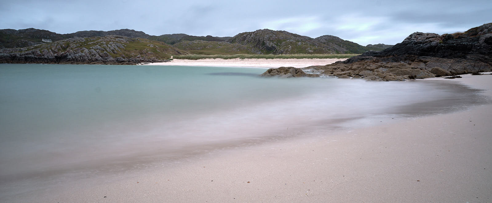 Achmevlich beach (long exposure) X-T2 XF16mm, ISO 200 f/16 at 20 s
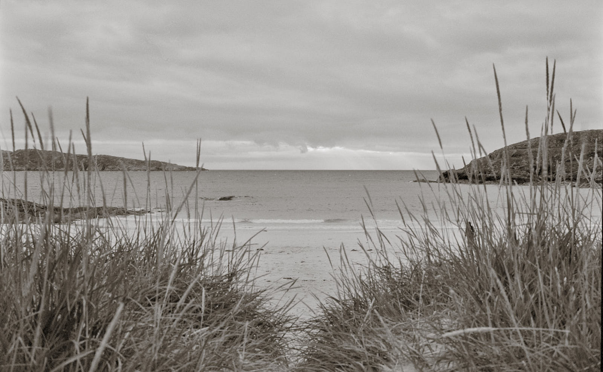 Achmevlich beach (Panchro 400). The figure in the grass is Kara. Fuji GW690ii f/11 at 1/30s. Toning in Capture One. You can read more about this roll and how I developed it here.
Stac Pollaidh
We took the walking route around Stac Pollaidh. There’s a new, lottery-funded, improved path here to protect the slopes and give the old well-trodden path a chance to recover.
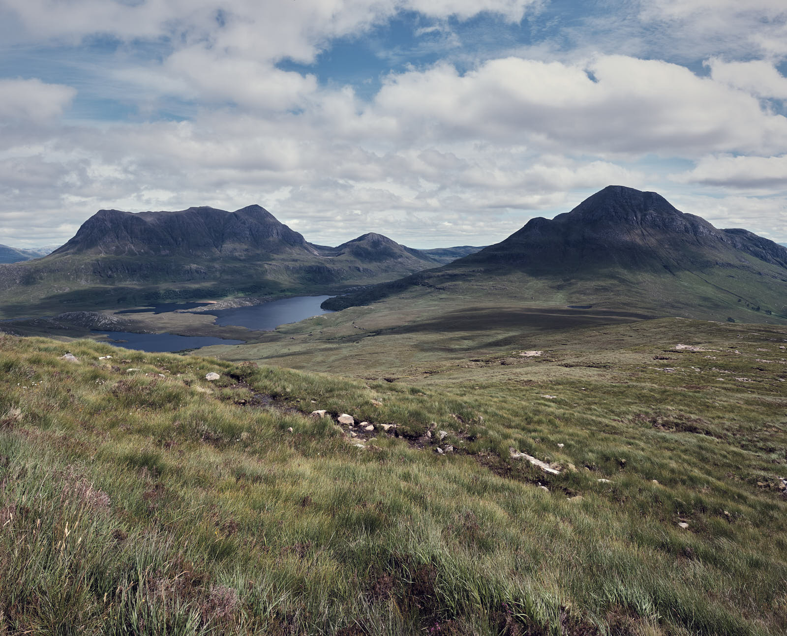
Going up Stac Pollaidh, looking East X-T2 XF16mm, ISO 200 f/11 at 1/250s. Stitch of 3 images (Hugin)
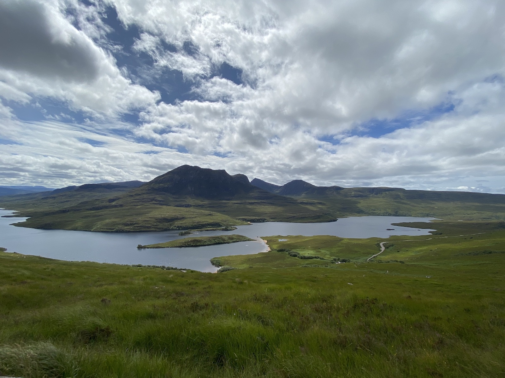 Going up Stac Pollaidh, looking South back towards the car park iPhone 11 wide-angle
Although we hadn’t really intended to, we took the higher path, and reached the ridge near the top, which in retrospect, is something we feel good about. Going the last few metres higher required better climbing experience, gear, or stupidity. Fortunately, we had left ours at the fork in the lower path.
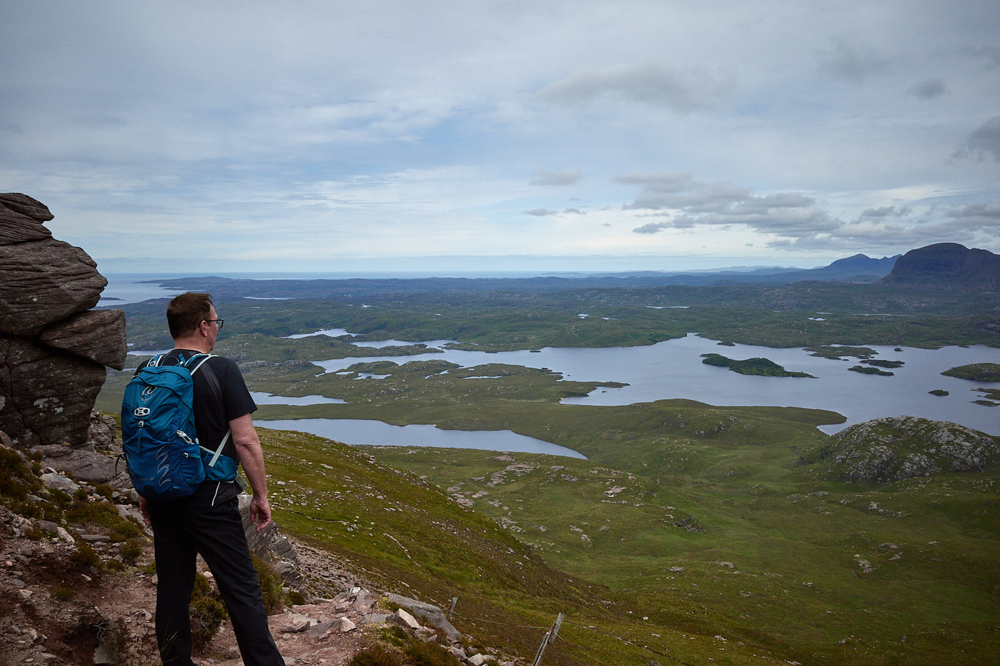 On the ridge on Stac Pollaidh Ricoh GRIII, taken by Kara
The Coigach peninsula
On a long meandering drive around the Coigach peninsula, the light changed constantly. Waze told us we were 2 hours from our apartment as we turned for home, yet only 37 km distant. This is because, perhaps, the twisty single-track roads ought to be driven only at 20 kph. The streams and foliage, deer and passing places pass by the window even at that speed, every now and then opening up wide open skies, the cotton grass stretching to the distant hills.
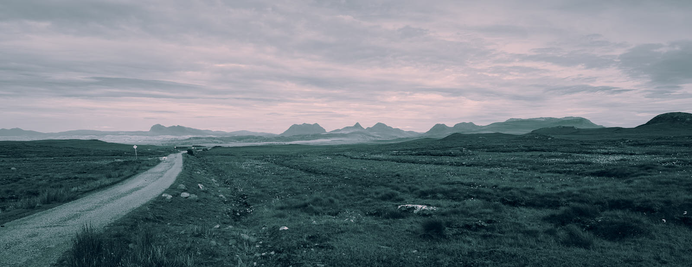 Road to Achnahaird Bay X-T2 XF16mm, ISO 320 f/16 at 1/125s. Stitch of 3 images (Hugin), cropped and coloured in Capture One Pro 20
… and the ever-present sheep.
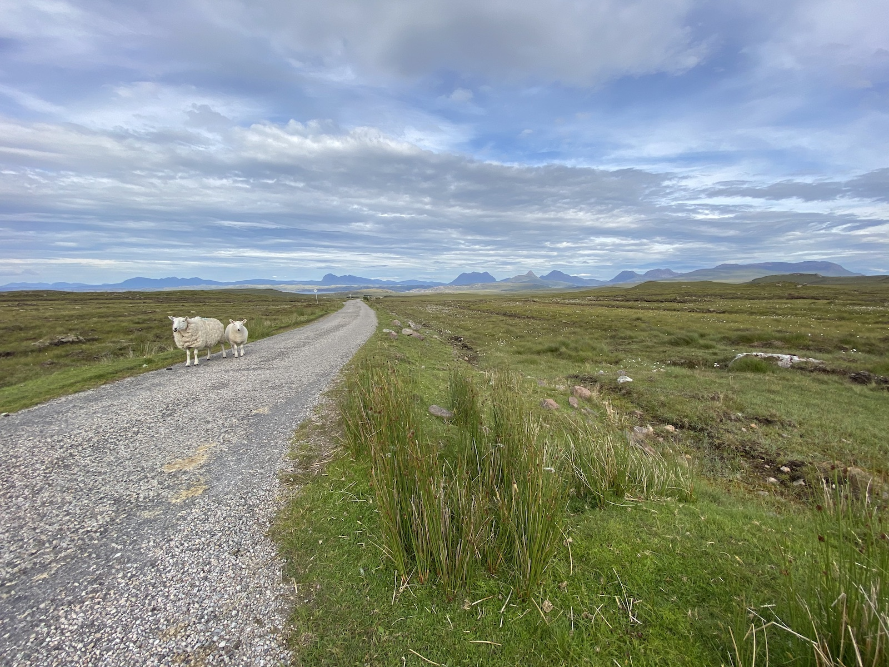 Two wanderers iPhone 11 wide-angle
Stoer and Clachtoll
This holiday was a good way to get familiar with a new car and I felt comfortable enough after a day or so to take it off-road down to a fisheries bothy at Stoer. We got chatting to a ranger when were here last October about whales and dolphins. We had promised to send the Mercedes dealer a picture of the car from our trip.
 The new Merc looking moody at Stoer Ricoh GRIII, Silver Efex Pro 2.0
The new Merc looking moody at Stoer Ricoh GRIII, Silver Efex Pro 2.0
One of our favourite places (of all the favourite places we have around this part of Scotland) is Clachtoll beach, which at the time we visited, was at high tide.
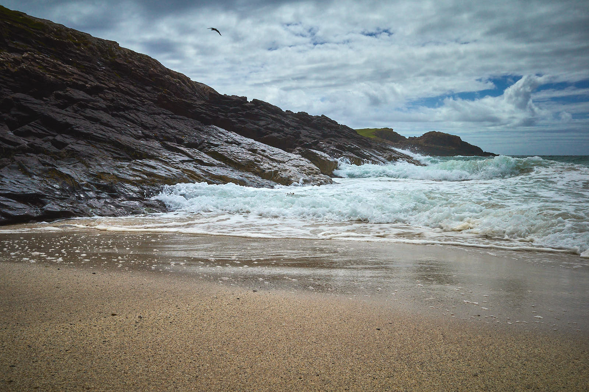 Clachtoll beach Ricoh GRIII, Capture One colour adjustments
Glencoe
The final day of our holiday was spent much further South, in Glencoe, stopping on the way down to make a brew and eat BLT sandwiches and cheese1 on the gravelly beach at Loch Lochy. Even with a wind, that was paradise.
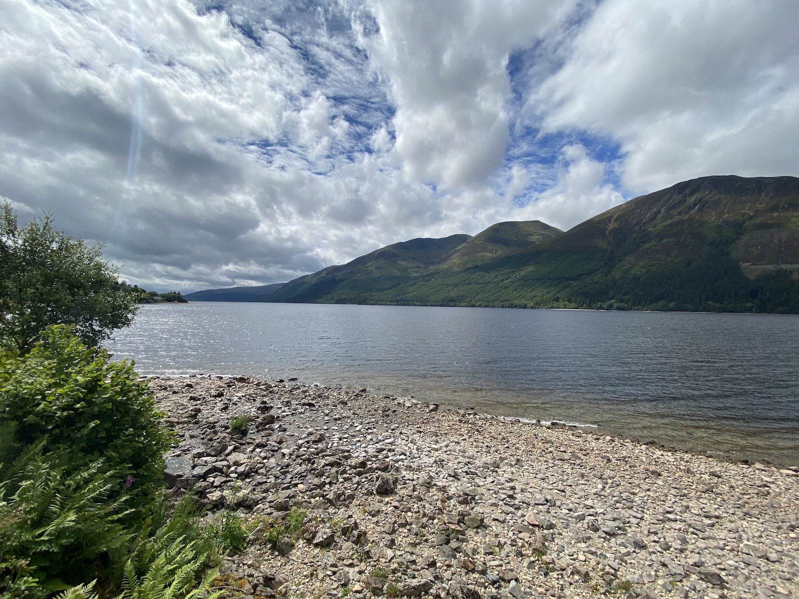 Loch Lochy iPhone 11 wide-angle
We checked in to The Corran by the ferry terminal and headed straight out for a walk along the Coupall to catch some time with Buachaille Etive Mòr.
Buachaille Etive Mòr X-T2 XF16mm, ISO 200 f/16 at 0.4 s
This is a magical place, even in the rain. Actually, probably especially in the rain. The heather and harebells, dancing in the wind to the syncopation of the river rushing over the rocks, flail and flutter, the great herdsman above, indifferent to their earnest performance.
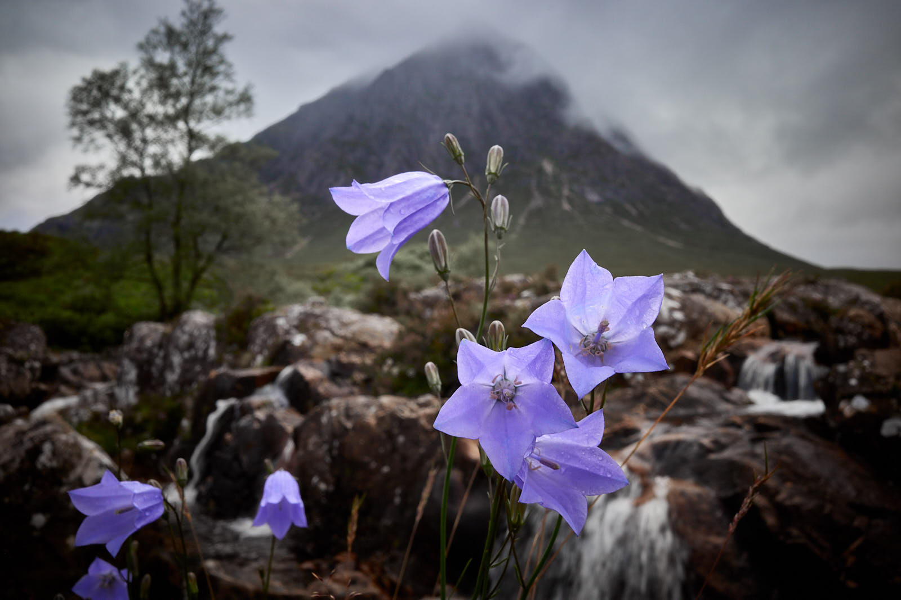 Harebells at Etive Mòr Ricoh GRIII, ISO 400 f/16 at 1/40s
The day’s adventure concluded with a flaccid fish supper from the Quarrier’s Kitchen in Ballachulish, before heading back to Corran to journal the day.
Home
The drive home was wet but not without adventure as we stopped at Tindrum, more to support the business than to buy stuff we actually needed. We marvelled at how busy it was, and how heavy the Northbound traffic was, caravans and campers heading in droves for the NC500 and the midges.
We stopped briefly at Achnambeithatch, the little white cottage below Bidean nam Bian on the A82, to watch the weather for a while.
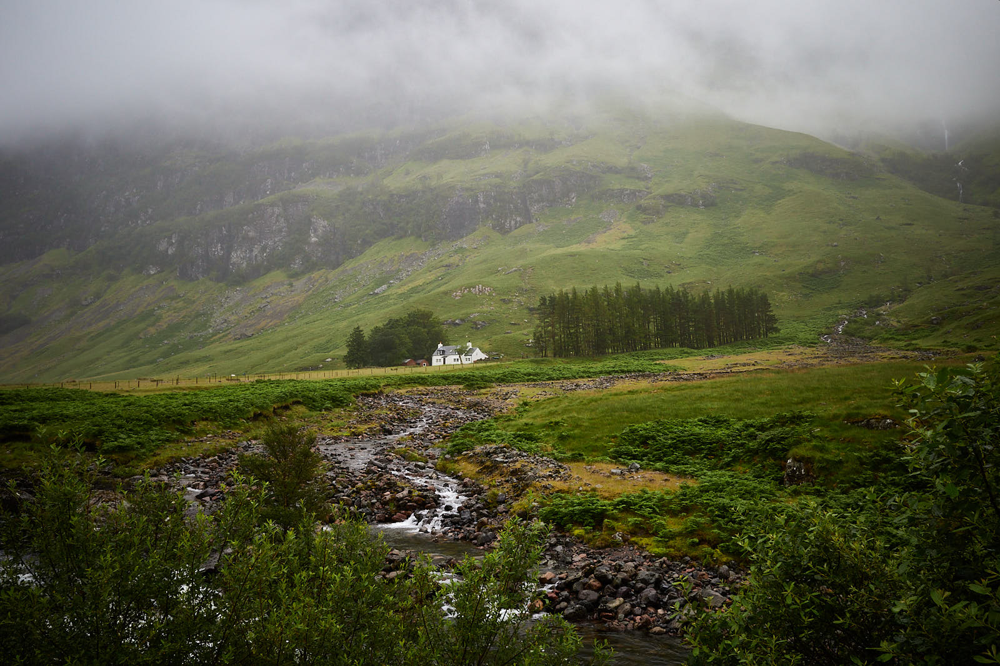 Achnambeithatch Ricoh GRIII, ISO 400 f/16 at 1/60 s
We decided that the rain was in for the day, so headed South, and lunched at the King’s House, as much to their delight as ours, emerging as they were for the first day back in business after months of COVID-19 closure.
Notes
There are more images associated with this post, taken with the Nikon FM using Ilford Orthochromatic film. I am a bit disappointed with the film photos on this trip. I hoped for better, sharper, images but am just not getting that with the big Fuji GW690ii at the moment. I am making errors, losing an entire roll from an earlier trip by using stop bath instead of developer, and the Lomo Berlin film I had in the GW690iii on this trip, which I ruined by using the wrong developer. You live and learn.
Footnotes
Cashel Blue, bought at the House of Bruar on the way up.↩︎